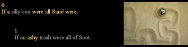

Image and Text, page 4
The hypermedia work thus serves to bring the two domains together: the inner and the outer space; the mind and the body; the abstract and the concrete; the real and the virtual; and science and art. The crossing over from one discourse to another is illustrated by the image Henon Strange, by Brian Meloon. The contributor statement states: "The Henon map is the two-dimensional analogue of the logistic equation H(x,y)=(x²-a*y+c,x), where a and c are constants. The picture shows a portion of the locus of points where the rate of escape of a point under iteration is the same going forwards and backwards (using the inverse map)." This statement might not mean much to those who don't rely on numbers to make a living, but the accompanying map compares to any work of art. It has a musical quality about it, with colorful flowing shapes with a rhythm of their own. The image is linked to a screen, which describes Sand as a marimba player.
Another verse comments on the multi-sensory as well as synaesthetic perceptions of Sand; Soot, however, seems to rely primarily on visual perceptions.
0
As albino cave bats who let go
of coloration, but develop keener
sensors, Sand.
1
Soot, who seeks to catch a falling star
in the monitoring
cave, evolves into colorblind.
The above pair of verses is accompanied by the image of one of the Ho pieces called Winddrifted, which depicts a sand etching in the process of getting erased. The above two verses contrast two different perspectives. Sand, by giving up attachment to one particular form or shape embraces many forms, shapes and perspectives. Soot, on the other hand, with his monocular vision is oblivious of other colors or perspectives. In an interesting series of links, the word "bat" is linked to Fibonacci x 3, an image of a patchwork quilt created by Elaine Krajenke Ellison, a mathematics teacher. The bio section on Ellison states that she "has designed and made numerous quilt wall hangings to inspire her students to explore mathematics from a new perspective." In the original piece, "11 different fabrics are used for the design, which is enhanced by the quilting lines that extend outside the triangle." The reader also comes across another quilt image by Ellison called Poincaré Plane. Precise descriptions of the quilt are given: Poincaré Plane is "44 inches in diameter; white background fabric with contrasting bright blue fabric for the tiles, which were sewn on using an appliqué technique." Another quilt image woven into the ballad is that of Spiraling Pythagorean Triples, designed and quilted by Diana Venters (also a mathematics teacher). Once again precise description of the quilt is provided: "37 x 37 inches; 7 different brightly colored fabrics and black fabric. The design center is a one-quarter-inch square; the side lengths of the largest triangle are 3.25 inches, 21 inches, and 25 inches." Quilting has been traditionally a women's craft and a way for women to express themselves artistically. Patchwork quilts in old days were made out of scraps of material cut out from discarded clothes. These quilts were a part of family history. In Ellison and Venters' quilt the art of quilt making is used to make mathematics more accessible. Both Ellison's and Venters' quilts bring together the discourse of feminism, art, and mathematics.
The word "evolves" in the above verse is linked to the screen with the following two verses and an image titled Hilbert (Sisyphus in Action).
0
If a silly con were all Sand were.
1
If an ashy trash were all of Soot.
The verses seem to pose a question regarding the nature of Sand and Soot. Is Sand just "silly con" (a play on the word "silicon")? Or, in other words, can Sand be reduced to its chemical composition? This verse alludes to Sand both as a metaphor as well as a medium. The sand is composed of silicon dioxide, commonly called silica, which is used to make silicon chips for computers. Computers are capable of generating electronic spaces of immense simplicity or complexity or art objects of subtle beauty. The online world is a sea of information—a space that requires navigation; it is also a medium of communication, including artistic communication. Silica is also used in the manufacture of glass, the material used for Sand's musical instrument. Should we then judge Sand by her mediumistic potential? Sand's world is that of open possibilities; it involves both creation and navigation. This reading is validated by the verse on navigation that is linked to the word "silly con."

How do we approach Soot's existence? Is Soot simply a lump of flesh, which one day will turn into ashes? The word "ashy" in the above verse connects to the first screen of the ballad, which presents Sand as a "gourd fanatic," playing a "glass marimba" and Soot as listening to the music. The image Hilbert, accompanying the above verses, depicts a ball in the act of creating a sand etching as it rolls through the sand. Sand's playing of a glass marimba and the Sisyphus ball in the act of tracing a sand etching refer to the creative act itself. Once again the linked verse reveals to the reader that like Sand, Soot should not be reduced to his materiality. The ballad tells the reader of Soot's growing love for Sand and her mediumistic potential to generate diverse worlds of great profundity and subtle beauty. Both Sand and Soot are thus constituted and reconstituted as the reader traverses multiple paths through the hypermedia work.
The linked verse on navigation reads:
0
Sand, a cat's cradle fan and economic.
Her shave and a haircut, fifteen cents;
her Oceania nodes of knot
remembered navigation;
her numerous fingers interlaced
with gloves—made of holes—slipped
successfully over;
in the dark apparatus, all one, all
the same nano-rope. This point
escaped Harry. Harry preferred Ouija
wavering words, reassured
by Ouija jerk.
Sand in the above verse is associated with the cat's cradle, a game between two players using a string to create patterns. Just as the same sand, one medium, can transform into different shapes, so it is with a piece of string or rope used to create multiple patterns or string figures that have become an integral part of many traditional cultures. The mediumistic potential of both the sand and the rope can be used to create new things. The image that accompanies the above verse is Verenga-uka (Female Spirit), a string figure from Easter Island. Sand is thus intimately associated with her creative potential—in fact she is described in terms of what she creates which is referred to as her "mediumistic con." Soot, on the other hand, relates to the world primarily through what he sees and what he can describe in words. Soot thus lacks the ability to navigate through the sea of multiple discourses that constitute human experience. By juxtaposing the Sand and Soot verses on each screen and intermixing the two in a few verses, the poem does seem to say that Soot is opening up to Sand's mode of perception. At another level, Sand and Soot can be thought of as a composite and the poem seen in terms of Soot's opening up to the "sandy" parts of himself.
Sand morphs from one shape to another, now a symmetrical or an asymmetrical pattern, and now swept out of existence by a slight gust of wind. The transience of sand patterns extends outwards to the transience of all creation. Thus the ballad is not only about navigation, but also about time. Since time and memory are intricately linked, it is also about memory—in fact, about two types of memory:
1
…….
Soot is attached to his memory lines,
crow's feet crinkle, scar arroyos, worry
furrows, wry sag, time written in skin,
in bone, in blood. Chemical peels do not
appeal to him. Nor implant chips (wait until
he gets sick!).
01010011
Sand's unbelievable memory
learned, of course,
not lived.
The two types of memory are: personal memory that determines Soot's being and becoming in the world and universal memory as manifest in the history of various discourses. Sand thus embodies the memory of multiple discourses that constitute human experience. The image that accompanies the above two verses is Tread by Trudy Myrrh Reagan, or Myrrh, whose art deals with ideas in science which somehow reflect back on life. The image seems to be of tire treads that have left their mark.
0
Sand insinuated herself. ZaumZoom in,
she has gone ahead. ZoomTzim out,
 she is not behind. To hear,
she is not behind. To hear,
in her gourd, her mallet-fall, a relation to
 emptiness, finest gauze, so finely
emptiness, finest gauze, so finely
 woven even the strands
woven even the strands
 appear to disappear.
appear to disappear.
1
Harry Soot believes he is watching.
Harry thinks he is in Times Square.
He is. She is not.